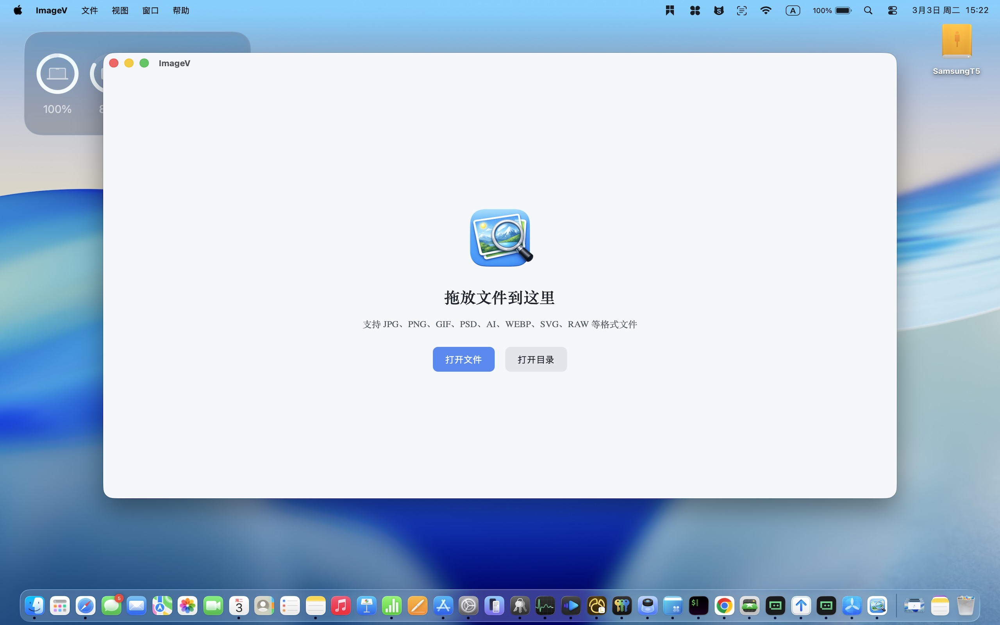
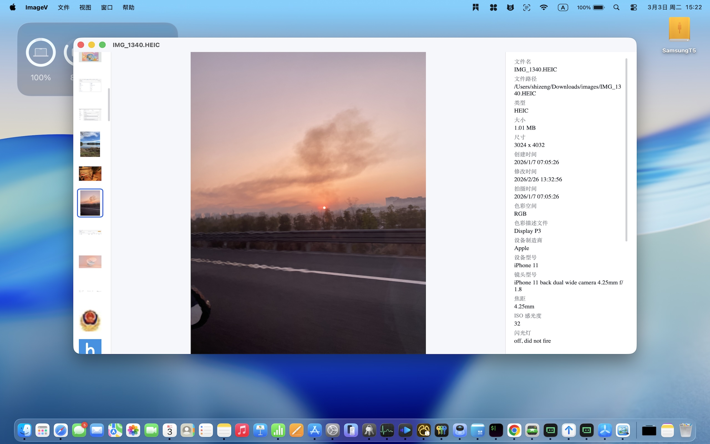
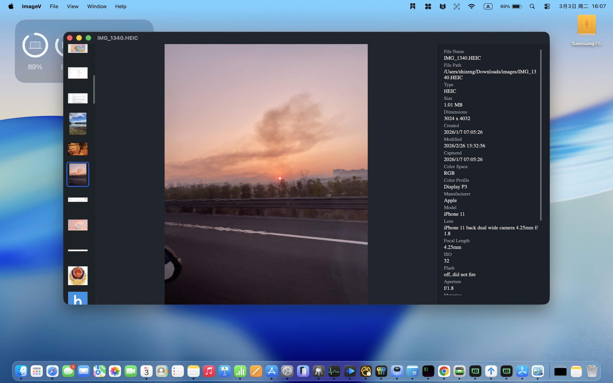

简单而不简单，每一个细节都为您精心打磨
全面支持 JPG, PNG, GIF, PSD, AI, WEBP, SVG, RAW 等主流图片格式，无需担心兼容性问题。
智能扫描文件夹及其所有子目录，一次加载，畅览整个图库，无需频繁切换文件夹。
一键查看照片详细参数：光圈、快门、ISO、拍摄时间、相机型号等，摄影师必备。
根据系统自动或手动切换主题，呵护您的双眼，提供沉浸式观图体验。
原生支持简体中文与英文界面，无缝切换，全球通用。
内置强大的搜索功能，通过文件名快速定位目标图片，海量图库也能秒速直达。
我们深知您的数据安全至关重要。ImageV 没有任何图片编辑功能。



由于 macOS 沙盒（Sandbox）的安全限制，App 默认只能访问您主动打开的单个文件。如果您想浏览文件夹内的所有图片，请使用“打开目录”功能来授权整个文件夹。
如果您在 1.0.0 版本中已经产生了“最近打开”的历史记录，由于我们在新版本中对底层代码进行了深度优化，导致部分数据结构发生了不兼容的改进。为了确保功能正常，建议您在升级后手动清空一次最近打开记录。